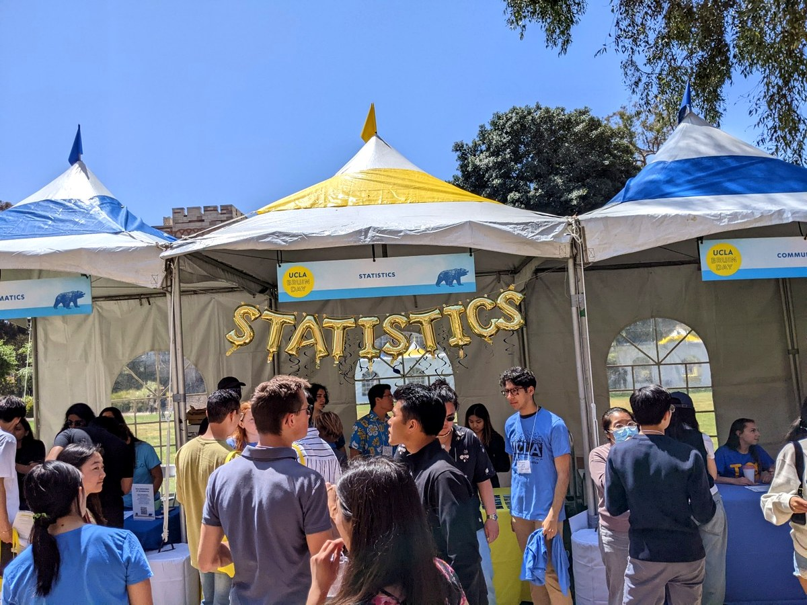
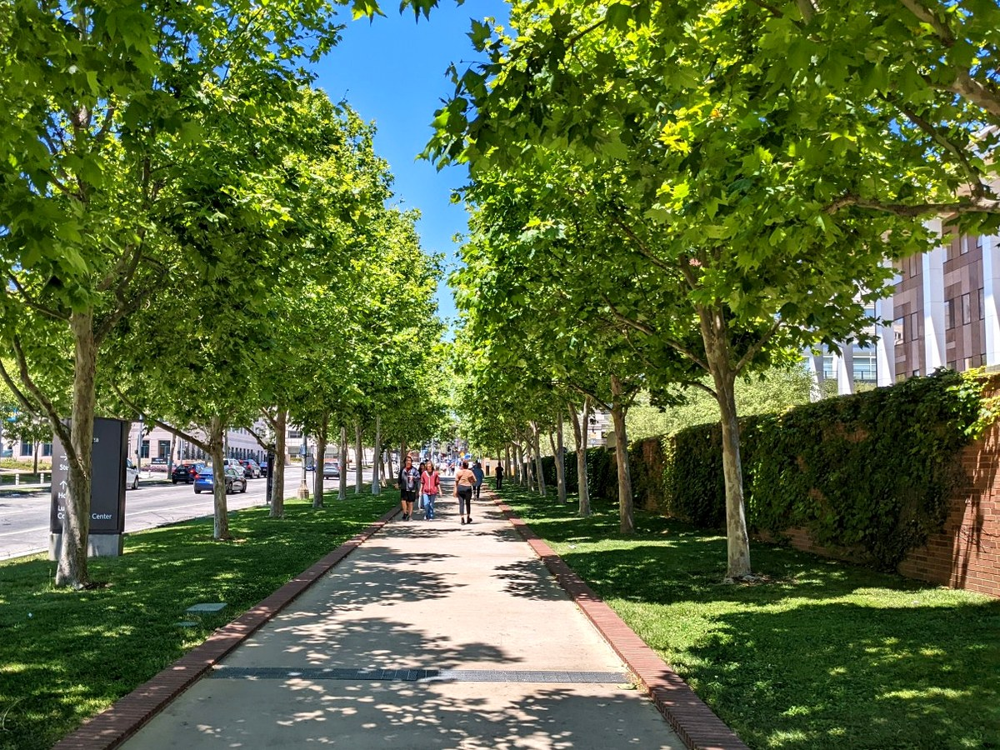
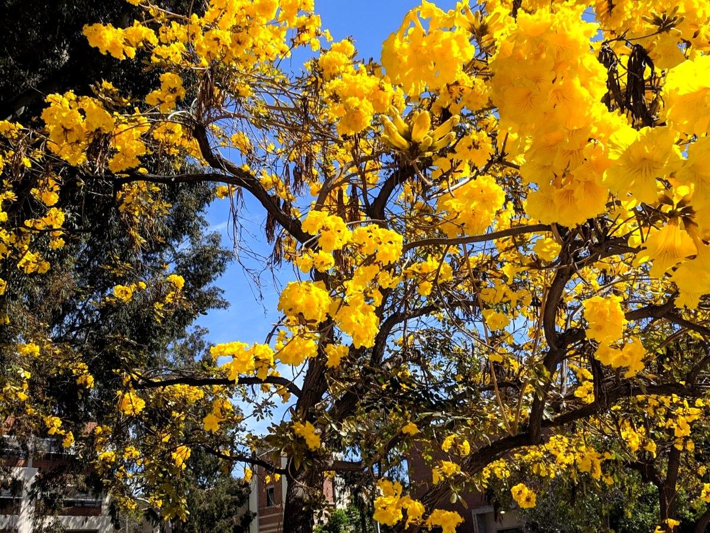

Designed for serious learning, career growth, and real connection.
MASDS combines statistical depth, applied data science, UCLA faculty expertise, and a campus-based experience that supports accountability and professional networking.



Program overview
See what the MASDS experience at UCLA is like.
Hear more about the program's in-person instruction, applied curriculum, faculty expertise, and career-focused preparation for students building data science and analytics careers.
A flexible path through a 44-unit degree.
Students complete core courses, electives, and a written thesis. Take two 4-unit courses per quarter to finish in spring of your second year, or adjust your course load to fit your schedule.
7 core coursesFoundational graduate coursework in probability, statistics, computing, data management, and communication.
4 electivesChoose from elective courses covering topics such as forecasting, deep learning, large language models, and Bayesian statistics.
A thesis projectBe mentored by a UCLA faculty member as you complete your own original thesis.
Tuition + value
Quarterly costs adjust with your course load.
MASDS tuition is charged by the unit. If work gets busy and you take fewer courses in a quarter, your tuition for that quarter is lower because you are enrolled in fewer units.
$1,229Per unit for Academic Year 2025-26.
1, 2, or 34-unit courses per quarter depending on your schedule.
EveningDesigned around full-time employment.
UCLAGain access to world-class campus resources, including research libraries and a massive digital library.
Ready to evaluate your fit?
Start your Fall 2027 application, review requirements, or contact the MASDS office with questions about preparation, pacing, or admissions.